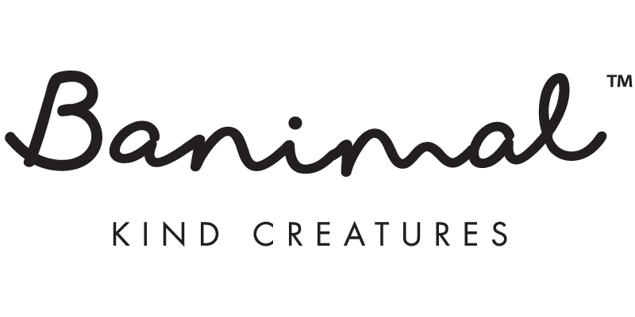
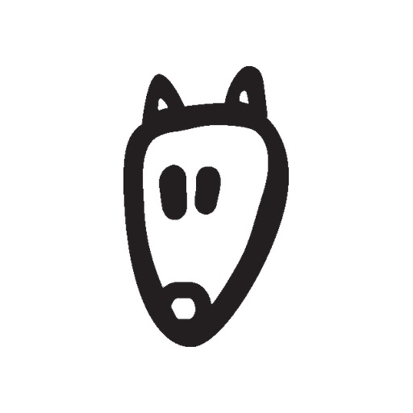

<title>Banimal™ Connector</title>
<link rel="preconnect" href="https://fonts.googleapis.com">
<link rel="preconnect" href="https://fonts.gstatic.com" crossorigin>
<link href="https://fonts.googleapis.com/css2?family=Baloo+2:wght@600;700;800&family=Public+Sans:wght@400;500;600;700&family=JetBrains+Mono:wght@400;500;600&display=swap" rel="stylesheet">
<style>
  :root{
    --ink:#231F20; --cream:#FBF4E4; --artcream:#F0EEDA; --paper:#FFFFFF;
    --rule:#DED5BE; --muted:#6B655A;
    --sage:#577D60; --sage-soft:#E4EEE6;
    --coral:#F16B6E; --coral-soft:#FCE7E7;
    --dustyrose:#B95F56;
    --accent:var(--sage); --accent-soft:var(--sage-soft); --accent-deep:#3F5E48;
  }
  @media (prefers-color-scheme: dark){
    :root:not([data-theme="light"]){
      --ink:#EDE7DA; --cream:#1B1A17; --artcream:#232019; --paper:#201D18;
      --rule:#3A362E; --muted:#B3AA98;
      --sage:#8FB89A; --sage-soft:#23302A;
      --coral:#E2938B; --coral-soft:#332521;
      --dustyrose:#E2938B;
      --accent:var(--sage); --accent-soft:var(--sage-soft); --accent-deep:#C9E2D0;
    }
  }
  :root[data-theme="dark"]{
    --ink:#EDE7DA; --cream:#1B1A17; --artcream:#232019; --paper:#201D18;
    --rule:#3A362E; --muted:#B3AA98;
    --sage:#8FB89A; --sage-soft:#23302A;
    --coral:#E2938B; --coral-soft:#332521;
    --dustyrose:#E2938B;
    --accent:var(--sage); --accent-soft:var(--sage-soft); --accent-deep:#C9E2D0;
  }

  *{box-sizing:border-box}
  html{scroll-behavior:smooth}
  body{
    margin:0; background:var(--cream); color:var(--ink);
    font-family:'Public Sans',system-ui,-apple-system,sans-serif; line-height:1.6;
    -webkit-font-smoothing:antialiased;
  }
  ::selection{ background:var(--coral); color:var(--paper); }
  .mono{ font-family:'JetBrains Mono',Menlo,Consolas,monospace; }
  h1,h2,h3{ font-family:'Baloo 2',sans-serif; text-wrap:balance; letter-spacing:-.01em; }
  a{ color:inherit; }

  .wrap{ max-width:1040px; margin:0 auto; padding:0 28px; }
  @media (max-width:640px){ .wrap{ padding:0 20px; } }

  /* ---- nav ---- */
  nav.top{
    position:sticky; top:0; z-index:40; background:color-mix(in srgb, var(--cream) 88%, transparent);
    backdrop-filter:blur(8px); border-bottom:1px solid var(--rule);
  }
  nav.top .inner{ max-width:1040px; margin:0 auto; padding:14px 28px; display:flex; align-items:center; justify-content:space-between; gap:16px; }
  .brandmark{ display:flex; align-items:center; gap:10px; font-family:'Baloo 2',sans-serif; font-weight:700; font-size:16px; }
  .brandmark-logo{ height:22px; width:auto; flex:none; display:block; }
  .brandmark-suffix{ font-family:'JetBrains Mono',monospace; font-size:11px; letter-spacing:.06em; text-transform:uppercase; color:var(--muted); }
  .navlinks{ display:flex; gap:22px; font-size:13.5px; font-weight:600; }
  .navlinks a{ text-decoration:none; color:var(--muted); }
  .navlinks a:hover{ color:var(--ink); }
  .navversion{ font-family:'JetBrains Mono',monospace; font-size:11px; color:var(--muted); border:1px solid var(--rule); border-radius:100px; padding:3px 10px; }

  /* ---- hero ---- */
  .hero{ padding:64px 0 20px; }
  .hero-grid{ display:grid; grid-template-columns:1.1fr 1fr; gap:48px; align-items:center; }
  @media (max-width:860px){ .hero-grid{ grid-template-columns:1fr; } }
  .eyebrow{
    display:inline-flex; align-items:center; gap:8px; font-family:'JetBrains Mono',monospace; font-size:11px;
    letter-spacing:.1em; text-transform:uppercase; color:var(--accent-deep); background:var(--accent-soft);
    padding:6px 12px; border-radius:100px; margin-bottom:20px;
  }
  .eyebrow i{ width:6px; height:6px; border-radius:50%; background:var(--accent); }
  h1.headline{ font-size:clamp(2.3rem,4.6vw,3.4rem); font-weight:700; line-height:1.04; margin:0 0 20px; }
  .headline .accent{ color:var(--sage); }
  .sub{ font-size:17px; color:var(--muted); max-width:46ch; margin:0 0 28px; }
  .sub strong{ color:var(--ink); }
  .hero-ctas{ display:flex; gap:12px; flex-wrap:wrap; }
  .btn{
    display:inline-flex; align-items:center; gap:8px; padding:12px 20px; border-radius:12px;
    font-weight:600; font-size:14.5px; text-decoration:none; border:2px solid var(--ink);
    transition:transform .15s ease;
  }
  .btn:hover{ transform:translateY(-1px); }
  .btn.primary{ background:var(--ink); color:var(--cream); }
  .btn.ghost{ background:transparent; color:var(--ink); }
  .hero-fig{ position:relative; }
  .hero-fig svg{ width:100%; height:auto; display:block; }
  .hero-cap{ margin-top:10px; font-family:'JetBrains Mono',monospace; font-size:10.5px; color:var(--muted); text-align:center; }

  /* ---- section shell ---- */
  section{ padding:64px 0; }
  section + section{ border-top:1px solid var(--rule); }
  .kicker{ font-family:'JetBrains Mono',monospace; font-size:11px; letter-spacing:.14em; text-transform:uppercase; color:var(--dustyrose); margin-bottom:12px; }
  h2.sec-title{ font-size:clamp(1.7rem,3.2vw,2.2rem); font-weight:700; margin:0 0 14px; }
  .sec-lede{ font-size:16px; color:var(--muted); max-width:64ch; margin:0 0 36px; }

  /* ---- two pillars ---- */
  .pillars{ display:grid; grid-template-columns:1fr 1fr; gap:22px; }
  @media (max-width:760px){ .pillars{ grid-template-columns:1fr; } }
  .pillar{
    border:2px solid var(--ink); border-radius:20px; padding:28px 26px; background:var(--paper);
    position:relative; overflow:hidden;
  }
  .pillar .num{ font-family:'JetBrains Mono',monospace; font-size:11px; color:var(--muted); letter-spacing:.08em; }
  .pillar h3{ font-size:21px; margin:10px 0 10px; }
  .pillar p{ font-size:14.5px; color:var(--muted); margin:0 0 16px; }
  .pillar ul{ margin:0; padding-left:18px; font-size:13.5px; color:var(--ink); }
  .pillar ul li{ margin:6px 0; }
  .pillar.a{ border-color:var(--sage); }
  .pillar.b{ border-color:var(--coral); }
  .pillar .tag{ display:inline-block; font-family:'JetBrains Mono',monospace; font-size:10px; text-transform:uppercase; letter-spacing:.06em; padding:3px 9px; border-radius:100px; margin-bottom:10px; }
  .pillar.a .tag{ background:var(--sage-soft); color:var(--sage); }
  .pillar.b .tag{ background:var(--coral-soft); color:var(--coral); }

  /* ---- architecture ---- */
  .diagram{ border:1px solid var(--rule); border-radius:20px; background:var(--paper); padding:20px; overflow-x:auto; }
  .diagram svg{ display:block; min-width:640px; width:100%; height:auto; }
  .architecture-note{ margin-top:20px; padding:16px 20px; background:var(--artcream); border-radius:14px; font-size:14px; max-width:70ch; }

  /* ---- security ---- */
  .security-list{ display:grid; grid-template-columns:1fr 1fr; gap:16px 28px; }
  @media (max-width:700px){ .security-list{ grid-template-columns:1fr; } }
  .security-item{ display:flex; gap:12px; align-items:flex-start; }
  .security-item .mark{
    flex:none; width:26px; height:26px; border-radius:50%; background:var(--sage-soft); color:var(--sage);
    display:flex; align-items:center; justify-content:center; font-size:13px; font-weight:700; margin-top:2px;
  }
  .security-item p{ margin:0; font-size:14.5px; }
  .security-item b{ display:block; font-size:15px; margin-bottom:2px; }

  /* ---- install ---- */
  .install-grid{ display:grid; grid-template-columns:1fr 1fr; gap:32px; align-items:start; }
  @media (max-width:800px){ .install-grid{ grid-template-columns:1fr; } }
  .steps{ list-style:none; margin:0; padding:0; counter-reset:step; }
  .steps li{ counter-increment:step; position:relative; padding:0 0 20px 40px; font-size:14.5px; }
  .steps li:last-child{ padding-bottom:0; }
  .steps li::before{
    content:counter(step); position:absolute; left:0; top:-1px; width:26px; height:26px; border-radius:50%;
    background:var(--ink); color:var(--cream); font-family:'JetBrains Mono',monospace; font-size:12px;
    display:flex; align-items:center; justify-content:center; font-weight:600;
  }
  .steps b{ display:block; margin-bottom:3px; }
  .steps span{ color:var(--muted); }
  .codeblock{
    background:var(--ink); color:var(--cream); border-radius:16px; padding:20px 22px; font-family:'JetBrains Mono',monospace;
    font-size:12.5px; line-height:1.75; overflow-x:auto;
  }
  .codeblock .c1{ color:var(--sage); } .codeblock .c2{ color:#c9bfa0; }
  .path{
    display:inline-flex; align-items:center; gap:8px; font-family:'JetBrains Mono',monospace; font-size:12.5px;
    background:var(--artcream); border-radius:10px; padding:8px 14px; margin-top:18px;
  }

  /* ---- palette toggle ---- */
  .toggle-grid{ display:grid; grid-template-columns:1fr 1.3fr; gap:32px; align-items:center; }
  @media (max-width:820px){ .toggle-grid{ grid-template-columns:1fr; } }
  .stage{
    border:2px solid var(--ink); border-radius:22px; padding:40px; display:flex; flex-direction:column;
    align-items:center; justify-content:center; gap:16px; min-height:260px; transition:background .25s ease;
    background:var(--stage-bg, var(--paper));
  }
  .stage img{ width:120px; height:120px; display:block; }
  .stage .stage-id{ font-family:'JetBrains Mono',monospace; font-size:12px; letter-spacing:.08em; text-transform:uppercase; color:var(--stage-fg, var(--ink)); }
  .stage .stage-hex{ font-family:'JetBrains Mono',monospace; font-size:11px; color:var(--stage-fg, var(--ink)); opacity:.75; }
  .swatches{ display:flex; flex-wrap:wrap; gap:10px; }
  .swatchbtn{
    width:44px; height:44px; border-radius:50%; border:2px solid var(--ink); cursor:pointer; padding:0;
    transition:transform .12s ease; position:relative;
  }
  .swatchbtn:hover{ transform:scale(1.08); }
  .swatchbtn.active{ box-shadow:0 0 0 3px var(--paper), 0 0 0 5px var(--ink); }
  .swatchbtn:focus-visible{ outline:3px solid var(--coral); outline-offset:2px; }
  .toggle-note{ margin-top:18px; font-size:13.5px; color:var(--muted); max-width:60ch; }
  .toggle-note code{ background:var(--artcream); padding:2px 6px; border-radius:6px; }

  footer{ margin-top:20px; padding:34px 0 60px; }
  footer .wrap{ display:grid; grid-template-columns:auto 1fr; gap:14px 24px; align-items:center; border-top:2px solid var(--ink); padding-top:22px; }
  footer .fmark{ background:#FFFFFF; border:2px solid var(--ink); border-radius:10px; padding:10px 14px; width:fit-content; }
  footer .fmark img{ height:38px; width:auto; display:block; filter:grayscale(1); }
  footer .finfo{ text-align:right; }
  footer .tag{ font-family:'JetBrains Mono',monospace; font-size:10.5px; letter-spacing:.06em; text-transform:uppercase; color:var(--muted); }
  footer .copyright{ font-size:12px; color:var(--muted); margin-top:4px; }
  footer .fsuper{ grid-column:1/-1; text-align:right; font-size:11px; color:var(--muted); margin-top:2px; }
  @media (max-width:560px){
    footer .wrap{ grid-template-columns:1fr; }
    footer .finfo, footer .fsuper{ text-align:left; }
  }

  @media (prefers-reduced-motion: no-preference){
    .pulse{ animation:pulse 2.6s ease-in-out infinite; }
  }
  @keyframes pulse{
    0%,100%{ opacity:.35; r:5; }
    50%{ opacity:1; r:7; }
  }
</style>

<nav class="top">
  <div class="inner">
    <div class="brandmark">
      
      <span class="brandmark-suffix">Connector</span>
    </div>
    <div class="navlinks">
      <a href="#pillars">What it does</a>
      <a href="#architecture">Architecture</a>
      <a href="#security">Security</a>
      <a href="#install">Install</a>
    </div>
    <span class="navversion">v5.1.0</span>
  </div>
</nav>

<header class="hero">
  <div class="wrap hero-grid">
    <div>
      <div class="eyebrow"><i></i>wordpress-plugin/banimal-ecosystem-connector</div>
      <h1 class="headline">Your store relays.<br/>The <span class="accent">Worker</span> decides.</h1>
      <p class="sub">Banimal™ Connector is a thin, signed WordPress client. It holds no payment credentials, no brand assets, and no opinion of its own — every order event and every brand colour comes from <strong>one place</strong>, not from whichever plugin got installed last.</p>
      <div class="hero-ctas">
        <a class="btn primary" href="#install">See install steps</a>
        <a class="btn ghost" href="#architecture">How it's built</a>
      </div>
    </div>
    <div class="hero-fig">
      <svg viewBox="0 0 460 380" role="img" aria-label="Diagram of the verified Sam Fox fox-head mark sitting at the midpoint of a connector line joining a WordPress node on the left to a Cloudflare Worker node on the right.">
        <line x1="70" y1="230" x2="390" y2="230" stroke="var(--ink)" stroke-width="3" stroke-dasharray="1 14" stroke-linecap="round"/>
        <circle class="pulse" cx="230" cy="230" r="5" fill="var(--coral)"/>

        <circle cx="70" cy="230" r="46" fill="var(--paper)" stroke="var(--ink)" stroke-width="3"/>
        <text x="70" y="235" text-anchor="middle" class="mono" font-family="JetBrains Mono, monospace" font-size="13" fill="var(--ink)" font-weight="600">WP</text>
        <text x="70" y="292" text-anchor="middle" class="mono" font-family="JetBrains Mono, monospace" font-size="11" fill="var(--muted)">WordPress</text>

        <circle cx="390" cy="230" r="46" fill="var(--paper)" stroke="var(--ink)" stroke-width="3"/>
        <text x="390" y="235" text-anchor="middle" class="mono" font-family="JetBrains Mono, monospace" font-size="13" fill="var(--ink)" font-weight="600">CF</text>
        <text x="390" y="292" text-anchor="middle" class="mono" font-family="JetBrains Mono, monospace" font-size="11" fill="var(--muted)">Worker</text>

        <line x1="70" y1="230" x2="212" y2="186" stroke="var(--ink)" stroke-width="2" stroke-dasharray="1 10" stroke-linecap="round"/>
        <line x1="390" y1="230" x2="248" y2="186" stroke="var(--ink)" stroke-width="2" stroke-dasharray="1 10" stroke-linecap="round"/>
        <image data-icon-ink="../../docs/brand/assets/samfox-icon-verified-ink.png" data-icon-cream="../../docs/brand/assets/samfox-icon-verified-cream.png" href="../../docs/brand/assets/samfox-icon-verified-ink.png" x="185" y="80" width="90" height="90" />
      </svg>
      <div class="hero-cap">the verified Sam Fox™ mark — not an approximation</div>
    </div>
  </div>
</header>

<section id="pillars">
  <div class="wrap">
    <div class="kicker">What it does</div>
    <h2 class="sec-title">Two jobs. One connector.</h2>
    <p class="sec-lede">Both run through the same thin client, the same signed channel, and the same rule: nothing sensitive ever gets stored twice.</p>
    <div class="pillars">
      <div class="pillar a">
        <span class="tag">commerce sync</span>
        <div class="num">01</div>
        <h3>WooCommerce → Worker</h3>
        <p>Order status changes relay to the Worker over a signed channel. The Worker — not WordPress — is the single source of truth for orders, payments, and delivery.</p>
        <ul>
          <li>HMAC-SHA256 signed, constant-time verified</li>
          <li>Idempotent by <code class="mono">event_id</code> — safe to retry</li>
          <li>A terminal order (cancelled, refunded) never moves backward</li>
        </ul>
      </div>
      <div class="pillar b">
        <span class="tag">brand alignment</span>
        <div class="num">02</div>
        <h3>Sam Fox™ CI Guide → theme</h3>
        <p>The verified palette and icon rules are fetched live from the Worker and printed as CSS custom properties on every page — not copied into the plugin once and left to drift.</p>
        <ul>
          <li>Public, unauthenticated, read-only endpoint</li>
          <li>Cached an hour, refetched automatically</li>
          <li>Silent no-op if unreachable — never breaks a page</li>
        </ul>
      </div>
    </div>
  </div>
</section>

<section id="palette">
  <div class="wrap">
    <div class="kicker">Live in every app that installs this</div>
    <h2 class="sec-title">Nine themes. One fox head. Instantly.</h2>
    <p class="sec-lede">This is exactly the toggle every connected app gets for free: the same 9 verified themes and the same two icon files, served live from <code class="mono">/api/brand-guide</code> — never bundled, never redrawn.</p>
    <div class="toggle-grid">
      <div class="stage" id="paletteStage">
        
        <div class="stage-id" id="paletteId">CREAM</div>
        <div class="stage-hex" id="paletteHex">#FBF4E4</div>
      </div>
      <div>
        <div class="swatches" id="paletteSwatches"></div>
        <p class="toggle-note">Click a swatch. The background, the accent, and the icon variant (<code>ink</code> or <code>cream</code>) all come from one <code>themes</code> array in the brand guide response — no app-side lookup table to keep in sync.</p>
      </div>
    </div>
  </div>
</section>

<section id="architecture">
  <div class="wrap">
    <div class="kicker">Architecture</div>
    <h2 class="sec-title">How a thin client stays thin</h2>
    <p class="sec-lede">The plugin makes exactly one kind of outbound call — to the Worker. It never talks to Paystack, BobGo, GitHub, or Google Drive directly; those live exclusively behind it.</p>
    <div class="diagram">
      <svg viewBox="0 0 980 320">
        <g font-family="'JetBrains Mono', monospace" font-size="12" fill="var(--ink)">
          <rect x="40" y="115" width="190" height="90" rx="14" fill="var(--paper)" stroke="var(--ink)" stroke-width="2"/>
          <text x="135" y="152" text-anchor="middle" font-weight="600">WordPress</text>
          <text x="135" y="172" text-anchor="middle" fill="var(--muted)" font-size="10.5">Banimal™ Connector</text>

          <path d="M230,140 L385,140" stroke="var(--sage)" stroke-width="2.5" marker-end="url(#arrow)"/>
          <text x="307" y="130" text-anchor="middle" fill="var(--sage)" font-size="10.5">signed event</text>

          <path d="M385,182 L230,182" stroke="var(--coral)" stroke-width="2.5" marker-end="url(#arrow2)"/>
          <text x="307" y="203" text-anchor="middle" fill="var(--coral)" font-size="10.5">brand tokens (public)</text>

          <rect x="390" y="70" width="230" height="170" rx="14" fill="var(--artcream)" stroke="var(--ink)" stroke-width="2"/>
          <text x="505" y="105" text-anchor="middle" font-weight="600">Cloudflare Worker</text>
          <text x="505" y="128" text-anchor="middle" fill="var(--muted)" font-size="10">/api/wp/events</text>
          <text x="505" y="146" text-anchor="middle" fill="var(--muted)" font-size="10">/api/brand-guide</text>
          <text x="505" y="164" text-anchor="middle" fill="var(--muted)" font-size="10">/api/orders · /api/payments</text>
          <text x="505" y="182" text-anchor="middle" fill="var(--muted)" font-size="10">D1 · orders, brands, wp_bridge_events</text>

          <path d="M620,110 L780,63" stroke="var(--rule)" stroke-width="2" marker-end="url(#arrow3)"/>
          <path d="M620,155 L780,155" stroke="var(--rule)" stroke-width="2" marker-end="url(#arrow3)"/>
          <path d="M620,200 L780,247" stroke="var(--rule)" stroke-width="2" marker-end="url(#arrow3)"/>
          <text x="800" y="58" fill="var(--muted)" font-size="11">Paystack</text>
          <text x="800" y="159" fill="var(--muted)" font-size="11">BobGo</text>
          <text x="800" y="251" fill="var(--muted)" font-size="11">GitHub / R2</text>
        </g>
        <defs>
          <marker id="arrow" markerWidth="8" markerHeight="8" refX="6" refY="4" orient="auto"><path d="M0,0 L8,4 L0,8 Z" fill="var(--sage)"/></marker>
          <marker id="arrow2" markerWidth="8" markerHeight="8" refX="6" refY="4" orient="auto"><path d="M0,0 L8,4 L0,8 Z" fill="var(--coral)"/></marker>
          <marker id="arrow3" markerWidth="8" markerHeight="8" refX="6" refY="4" orient="auto"><path d="M0,0 L8,4 L0,8 Z" fill="var(--muted)"/></marker>
        </defs>
      </svg>
    </div>
    <p class="architecture-note">The Worker is the only thing that ever sees a Paystack key, a BobGo credential, or a GitHub token. WordPress sees a base URL and a signing secret — nothing else needs to.</p>
  </div>
</section>

<section id="security">
  <div class="wrap">
    <div class="kicker">Security</div>
    <h2 class="sec-title">Not an afterthought — a rewrite</h2>
    <p class="sec-lede">Version 5.0.0 replaced the previous 4.7.x line rather than patch it. What changed is specific, not a vague "hardening pass":</p>
    <div class="security-list">
      <div class="security-item"><div class="mark">✓</div><p><b>Fails closed on a weak key</b>A missing, short, or default-placeholder <code class="mono">AUTH_KEY</code> means the plugin refuses to store or use a secret — not a predictable fallback.</p></div>
      <div class="security-item"><div class="mark">✓</div><p><b>No secret reaches the browser</b>The old diagnostics page decrypted the master key into a script tag. The rewrite is server-side only, nonce-protected, and never echoes a secret.</p></div>
      <div class="security-item"><div class="mark">✓</div><p><b>Inert without WooCommerce</b>The commerce bridge registers zero hooks when WooCommerce isn't active — no dormant code path waiting to misfire.</p></div>
      <div class="security-item"><div class="mark">✓</div><p><b>Constant-time signature checks</b>HMAC-SHA256 over the raw body, compared without leaking match progress through response timing.</p></div>
    </div>
  </div>
</section>

<section id="install">
  <div class="wrap install-grid">
    <div>
      <div class="kicker">Install</div>
      <h2 class="sec-title">Four steps, no guesswork</h2>
      <ol class="steps">
        <li><b>Set the shared secret on the Worker.</b><span><code class="mono">wrangler secret put WP_BRIDGE_SECRET</code></span></li>
        <li><b>Configure the plugin.</b><span>Banimal™ → Configuration: Worker base URL and the same signing secret.</span></li>
        <li><b>Confirm the connection.</b><span>Banimal™ → Diagnostics: "Check Worker Health" and "Check Brand Guide" — both hit the real Worker live, no cached fakes.</span></li>
        <li><b>Change an order status.</b><span>Confirm a row lands in <code class="mono">wp_bridge_events</code> — the sync is working.</span></li>
      </ol>
      <div class="path">📁 wordpress-plugin/banimal-ecosystem-connector · v5.1.0</div>
      <p style="margin-top:14px;font-size:13.5px;"><a href="../../docs/manual/user-manual.html" style="color:var(--dustyrose);">Full manual, troubleshooting, and API reference →</a></p>
    </div>
    <div class="codeblock">
<span class="c2">// what the plugin sends — nothing more</span><br/>
{<br/>
&nbsp;&nbsp;<span class="c1">"event_type"</span>: "woocommerce.order_status_changed",<br/>
&nbsp;&nbsp;<span class="c1">"schema_version"</span>: "1.0",<br/>
&nbsp;&nbsp;<span class="c1">"source"</span>: "wordpress-plugin",<br/>
&nbsp;&nbsp;<span class="c1">"payload"</span>: {<br/>
&nbsp;&nbsp;&nbsp;&nbsp;<span class="c1">"wc_order_id"</span>: 4821,<br/>
&nbsp;&nbsp;&nbsp;&nbsp;<span class="c1">"status_to"</span>: "processing",<br/>
&nbsp;&nbsp;&nbsp;&nbsp;<span class="c1">"total"</span>: "560.00",<br/>
&nbsp;&nbsp;&nbsp;&nbsp;<span class="c1">"currency"</span>: "ZAR"<br/>
&nbsp;&nbsp;}<br/>
}<br/>
<span class="c2">// signed: X-Banimal-Signature: hmac-sha256(body, secret)</span>
    </div>
  </div>
</section>

<footer>
  <div class="wrap">
    <div class="fmark"></div>
    <div class="finfo">
      <div class="tag">Banimal™ Connector — product page · companion to the Sam Fox™ Core CI Guide Master</div>
      <div class="copyright">© 2026 Fruitful Shops (Pty) Ltd · Artwork © Sam Fox™</div>
    </div>
    <div class="fsuper">Brand tokens on this page are applied live via /api/brand-guide — the CI Guide master itself is unaltered.</div>
  </div>
</footer>

<script>
(function () {
  // Sam Fox CI rule: the icon reverses to its cream render only on an ink
  // (dark) background — every other background keeps the ink render
  // legible. This page's own dark mode IS an ink background, so every
  // static icon/logo placement here (not just the palette-toggle demo)
  // needs to swap the same way, automatically, whichever way the page's
  // theme resolves (explicit data-theme, or the system default).
  function pageIsDark() {
    var explicit = document.documentElement.getAttribute('data-theme');
    if (explicit === 'dark') return true;
    if (explicit === 'light') return false;
    return !!(window.matchMedia && window.matchMedia('(prefers-color-scheme: dark)').matches);
  }
  function applyIconTheme() {
    var dark = pageIsDark();
    document.querySelectorAll('[data-icon-ink]').forEach(function (el) {
      var src = dark ? el.getAttribute('data-icon-cream') : el.getAttribute('data-icon-ink');
      if (el.tagName.toLowerCase() === 'image') el.setAttribute('href', src);
      else el.setAttribute('src', src);
    });
  }
  applyIconTheme();
  if (window.matchMedia) {
    window.matchMedia('(prefers-color-scheme: dark)').addEventListener('change', applyIconTheme);
  }
})();
</script>
<script>
(function () {
  // Mirrors CI_GUIDE.themes in src/worker/routes/brand-guide.ts exactly.
  // In production an app fetches this from GET /api/brand-guide instead of
  // holding a local copy — embedded here only because this page previews
  // standalone, before the Worker carrying it is deployed.
  var THEMES = [
    { id: 'ink', background: '#231F20', accentInk: '#F2EFE6', iconVariant: 'cream' },
    { id: 'sage', background: '#577D60', accentInk: '#FFFFFF', iconVariant: 'ink' },
    { id: 'mint', background: '#A7DACB', accentInk: '#111111', iconVariant: 'ink' },
    { id: 'coral', background: '#F16B6E', accentInk: '#111111', iconVariant: 'ink' },
    { id: 'dustyrose', background: '#B95F56', accentInk: '#FFFFFF', iconVariant: 'ink' },
    { id: 'artcream', background: '#F0EEDA', accentInk: '#111111', iconVariant: 'ink' },
    { id: 'teal', background: '#1E9F97', accentInk: '#FFFFFF', iconVariant: 'ink' },
    { id: 'red', background: '#E63946', accentInk: '#FFFFFF', iconVariant: 'ink' },
    { id: 'cream', background: '#FBF4E4', accentInk: '#111111', iconVariant: 'ink', default: true }
  ];
  var ICONS = { ink: '../../docs/brand/assets/samfox-icon-verified-ink.png', cream: '../../docs/brand/assets/samfox-icon-verified-cream.png' };

  var stage = document.getElementById('paletteStage');
  var icon = document.getElementById('paletteIcon');
  var idLabel = document.getElementById('paletteId');
  var hexLabel = document.getElementById('paletteHex');
  var swatchWrap = document.getElementById('paletteSwatches');

  function applyTheme(theme, btn) {
    stage.style.setProperty('--stage-bg', theme.background);
    stage.style.setProperty('--stage-fg', theme.accentInk);
    icon.src = ICONS[theme.iconVariant];
    idLabel.textContent = theme.id.toUpperCase();
    hexLabel.textContent = theme.background;
    var active = swatchWrap.querySelector('.swatchbtn.active');
    if (active) active.classList.remove('active');
    if (btn) btn.classList.add('active');
  }

  THEMES.forEach(function (theme) {
    var btn = document.createElement('button');
    btn.className = 'swatchbtn' + (theme.default ? ' active' : '');
    btn.style.background = theme.background;
    btn.setAttribute('aria-label', theme.id);
    btn.setAttribute('title', theme.id);
    btn.addEventListener('click', function () { applyTheme(theme, btn); });
    swatchWrap.appendChild(btn);
  });

  var defaultTheme = THEMES.filter(function (t) { return t.default; })[0] || THEMES[0];
  applyTheme(defaultTheme, swatchWrap.querySelector('.swatchbtn.active'));
})();
</script>
